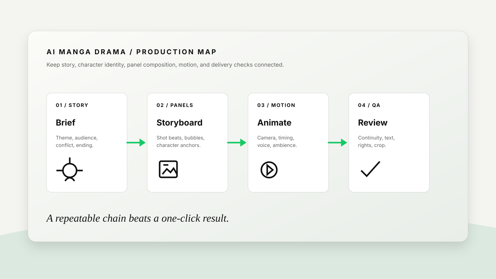

AI MANGA DRAMA WORKFLOW
How to make an AI manga drama from one story brief.
AI manga dramas work best when you build them like a small production: write the story, lock the characters, draw reviewable panels, animate only the strongest beats, then add voice and sound. This practical guide takes you from a blank page to a short vertical episode you can actually review and revise.

What you will make
- A 30–60 second vertical AI manga drama with one clear conflict and payoff.
- A reusable character sheet and reference pack for consistent faces, outfits, props, and locations.
- Six to eight storyboard panels that can be reviewed before animation.
- A short voice, ambience, and caption plan that supports the story instead of hiding weak scenes.
THE CORE IDEA
Do not ask AI to make a whole episode at once.
The most common failure is a single prompt that asks for a complete manga, consistent characters, dialogue, camera moves, music, and a dramatic ending. The output may look impressive for one frame, but it is difficult to repair because every decision is mixed together.
A better approach is to separate the work into five reviewable layers: story, character identity, panels, motion, and finishing. Each layer gives the next one a clearer constraint. If the protagonist's jacket changes, you fix the character reference; if the action is confusing, you fix the panel order; if the scene feels flat, you adjust motion or sound.
STEP 1 / STORY
Write a one-minute story with one emotional turn.
Start with a story that can be understood without a long backstory. For a first episode, use one protagonist, one obstacle, one decision, and one visual payoff. A simple structure is easier to storyboard and gives the audience a reason to keep watching.
| Story beat | Question to answer | Example: “The Last Train Home” |
|---|---|---|
| Hook | What changes in the first two seconds? | A girl sees the last train leaving while a tiny paper fox glows in her hand. |
| Problem | What makes the next action necessary? | The fox points toward a dark platform where her lost brother's charm is visible. |
| Choice | What does the protagonist risk? | She steps off the safe path to retrieve the charm before the lights go out. |
| Payoff | What image should the viewer remember? | The train window reflects both siblings, even though only one is on the platform. |
STEP 2 / CHARACTER LOCK
Build a character sheet before generating panels.
Character consistency comes from a short list of visual anchors, not from repeating the character's name. Choose details that can be checked at thumbnail size: face shape, hair silhouette, outfit colors, one accessory, and one expression range.
Identity anchors
Name the face shape, hairstyle, eye color, skin tone, age range, and one distinctive mark. Keep the list factual and short.
Wardrobe anchors
Specify the jacket or uniform, base colors, shoes, and one prop. Avoid changing the outfit unless the story requires it.
Performance anchors
Describe how the character moves when calm, afraid, angry, or relieved. This helps the video pass carry emotion from the panels.
Reference rules
Use one clean reference as the identity source. Label other images as mood, pose, location, or composition references so they do not compete.
Create a clean manga character reference sheet for [character name]. Show front, three-quarter, and side views plus three expressions: neutral, alarmed, relieved. Keep the same [hair silhouette], [face shape], [outfit], [accessory], and [color palette] in every view. White background, clear linework, no extra characters, no text except small view labels.
STEP 3 / PANELS
Turn the story into six to eight panels before you animate.
Storyboard panels are the cheapest place to discover a weak story. Make each panel answer one question: where are we, who is acting, what changes, and where should the eye look? Use panel descriptions that a human editor could sketch without guessing.
- Panel 1 — establish. Show the location, time, and the protagonist's normal state. Keep the composition simple enough to read on a phone.
- Panel 2 — interrupt. Introduce the unusual object, message, or threat that changes the scene.
- Panel 3 — reaction. Give the character a readable expression and body pose. Do not hide the emotion behind a complicated background.
- Panel 4 — direction. Show where the character must go. Use a line of sight, light source, doorway, or prop to guide the viewer.
- Panel 5 — decision. Make the risk visible. The audience should understand what can be lost.
- Panel 6 — action. Use a stronger angle or close-up for the physical move that changes the story.
- Panel 7 — payoff. Repeat one visual motif from the hook, but give it a new meaning.
- Panel 8 — hold. Leave a quiet final frame for dialogue, captions, or the next-episode hook.
For image generation, the GPT Image 2 tutorial is useful for reference-led panels, controlled edits, posters, and text-aware layouts. Keep dialogue bubbles short; add final lettering in an editor when exact wording matters.
STEP 4 / MOTION
Animate only the panels that carry story information.
Not every panel needs a complex camera move. Use motion where it clarifies a reveal, reaction, or transition. A small push-in on a face can carry more emotion than a fast camera spin that changes the character's identity.
| Panel job | Useful motion | What to check |
|---|---|---|
| Hook | Slow push-in, flickering light, or a sudden object movement. | Can the viewer understand the premise before the cut? |
| Reaction | Small head turn, eye movement, breath, or hand tightening. | Does the emotion remain readable at mobile size? |
| Action | One clear camera path with a defined start and end position. | Does motion support the action instead of distracting from it? |
| Payoff | Parallax, reflection movement, drifting particles, or a gentle hold. | Does the final image stay on screen long enough to land? |
When using a video model, describe observable movement: “camera tracks left from the platform sign to the girl's hand” is more useful than “make it dynamic.” For a deeper reference-led video workflow, see the Seedance 2.5 tutorial.
STEP 5 / VOICE AND SOUND
Use sound to connect panels, not to cover missing story.
AI manga drama often feels like a slideshow because every panel has the same rhythm. Add a small sound plan: one voice direction, one ambience bed, two or three transition effects, and a quiet moment before the payoff.
Young adult female voice, restrained and close, speaking as if trying not to wake someone on the train. Start uncertain, become urgent on “wait,” then soften on the final line. Leave a half-second pause before the last sentence.
Station ambience under panels 1–3; a distant train brake at the decision; one paper rustle when the fox moves; reduce music under dialogue; end with a warm two-note motif and one second of silence.
Keep dialogue short enough to read and hear. If a line needs three clauses, split it into two shots or rewrite it. For a connected social deliverable, pair the episode with a cover, caption, and hook using the social content pack workflow.
COPY-PASTE MASTER PROMPT
Give the production tool a job, references, and constraints.
Help me produce a 45-second vertical AI manga drama titled “[title]” for [audience]. Core emotion: [emotion]. Story spine: [one-sentence premise]. Character identity must remain consistent: [face, hair, outfit, accessory, palette]. Location: [place and time]. Create eight storyboard panels with shot size, character action, expression, dialogue or caption, background detail, and transition note. Then identify which four panels should be animated and give each a simple camera move with a clear start and end position. Use panel 1 as the hook and panel 7 as the emotional payoff. Avoid new characters, extra logos, random text, costume changes, unreadable dialogue, and unmotivated camera movement. End with a two-second hold for [final line or next-episode hook].
BAD VS BETTER
Specific production language produces easier revisions.
| Weak request | Better request | Why it works |
|---|---|---|
| Make an emotional manga video. | Open on a silent train platform at 11:58 p.m. A girl holds a glowing paper fox; the last train begins to move. Slow push-in, close-up on her hand, then a two-second reflection in the window. | It defines place, time, object, action, camera, and payoff. |
| Keep the character consistent. | Keep the same short black bob, amber eyes, green school jacket, red thread bracelet, and crescent hair clip in every panel and shot. | Continuity becomes visible and reviewable. |
| Add dramatic music. | Use low station ambience, a restrained pulse under the decision, no music under the confession, and a warm two-note motif on the final reflection. | Sound is tied to story beats instead of an abstract mood. |
DELIVERY CHECKLIST
Review the episode before you publish it.
Story clarity
Can a new viewer explain the conflict and emotional turn after one watch?
Character continuity
Do face, hair, outfit, prop, and screen direction survive every cut?
Panel readability
Does each frame have one focal action and enough contrast for a phone screen?
Text and voice
Are dialogue, captions, names, and claims spelled correctly and timed for reading?
Sound balance
Can the audience hear the important line without music or effects masking it?
Rights and safety
Have you checked reference-image permissions, music and voice terms, likeness, and brand restrictions?
COMMON MISTAKES
Repair the pipeline instead of adding more adjectives.
Too much plot
Reduce the first episode to one conflict and one payoff. Save world-building for later episodes.
Character drift
Return to the character sheet and regenerate only the failed panel or shot.
Text inside every image
Keep on-image dialogue short and add final lettering in a controlled editor when accuracy matters.
Motion without purpose
Give every camera move a story job: reveal, reaction, direction, action, or payoff.
FAQ
AI manga drama questions creators ask first.
How long should my first AI manga drama be?
Start with 30 to 60 seconds and six to eight panels. A short episode gives you enough room for a hook, a turn, and a payoff without making continuity impossible to review.
Should I make images or video first?
Make the character sheet and storyboard panels first. Animate only the panels that carry story information. This gives you a stable visual plan and makes failed motion easier to replace.
How can I make manga dialogue readable?
Keep each line short, use one speaker per panel when possible, provide the exact wording, and inspect the final image at the size where viewers will see it. Add final lettering separately if the wording is critical.
Can I turn one episode into social content?
Yes. Create a cover, a short hook, a caption, a behind-the-scenes prompt note, and one alternate ending from the same approved story spine. Keep each variant labeled so the team knows what changed.
PRACTICE THE PIPELINE
Bring one story idea and leave with a reviewable first episode.
Start with the master prompt, build the character sheet, and test one hook panel before expanding the episode. ChatArt Pro can be used as the practice workspace after the story and review criteria are clear.